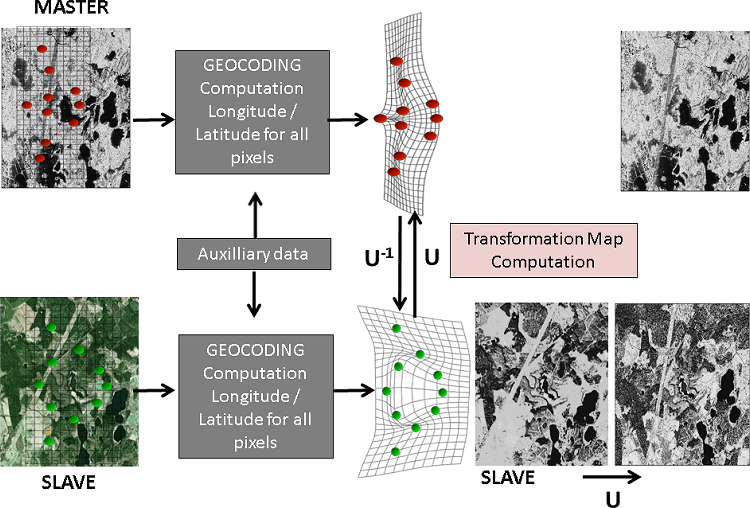
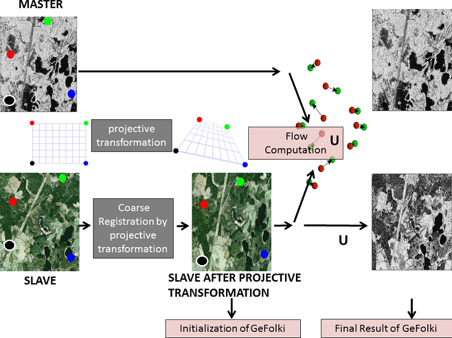
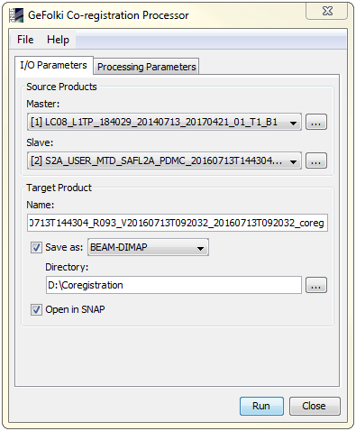
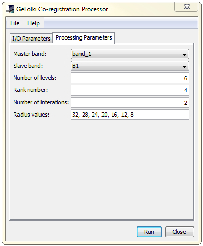

| GeFolki Co-registration Processor | |
The acronym GeFolki stands for Geoscience Extended Flow Optical Lucas-Kanade Iterative.
The GeFolki Co-registration Processor is based on developed by Guillaume Brigot, Elise Colin-Koeniguer, Aur´elien Plyer, and Fabrice Janez.
The GeFolki algorithm allows the registration of images in a nonparametric and dense way. GeFolki is based on a local method of optical flow derived from the Lucas-Kanade algorithm, with a multiscale implementation, and a specific filtering including rank filtering, rolling guidance filtering and local contrast inversion.
As prerequisites, the two input images should have the same number of bands, the same projection and the same pixel spacing. Also, note that "nodata" pixels are not supported. GeFolki takes two input images resampled at the same rate, and outputs the two components of the flow at every pixel position. The aim of the algorithm is to minimize a given criterion.

First coregistration scheme by geocoding from a geometric point of view:

Coregistration scheme by optical flow calculation:
The registration precision of GeFolki is about a few pixels, (1 pixel = 80 cm), compared to ten of pixels by geocoding. This precision opens new opportunities for studies related to data fusion, for example, with applications involving the counting of trees. It appears that the fusion of different images may improve detection performance, but only if we can trust the accuracy of registration. GeFolki has been proven to be faster than the baseline registration method, by a factor of 10 to 20.
NOTE: The memory required to process the images may be very high and therefore leads to unfeasibility on slow computers.
Source ProductMaster: Specify the current master product which will be used. Slave: Specify the current slave product which will be used. Target ProductName: Used to specify the name of the target product.
Save as:
Used to specify whether the target product should be saved to the file system. The
combo box presents a list of file formats.
The text field allows to specify a target directory. Open in SNAP: Used to specify whether the target product should be opened in the Sentinel Toolbox. When the target product is not saved, it is opened in the Sentinel Toolbox automatically. |
 |
|
Master band: Choose a band from the list. NOTE: The master band field must not be empty. Slave band: Choose a band from the list. NOTE: The slave band field must not be empty. Number of levels: Specify the total number of pyramid levels. If the overall displacement to find is large, a high number of pyramid levels is required. Rank number: Specify the rank number. The rank is a filtering step based on the rolling guidance filter, in order to make image textures more similar. It is also a function of local contrast inversion, for all cases where the contrast exhibited between the different sensors is not the same. The rank number enhances the robustness of the motion estimation. Number of iterations: Specify the total number of iterations. Radius values: Specify the radius values that describes the size of the local window. In the case where the images are taken with different geometries, the terrain projection effects can induce more local deformation between the two images, and in this case, it could be necessary to use a smaller radius to be more precise. |
 |